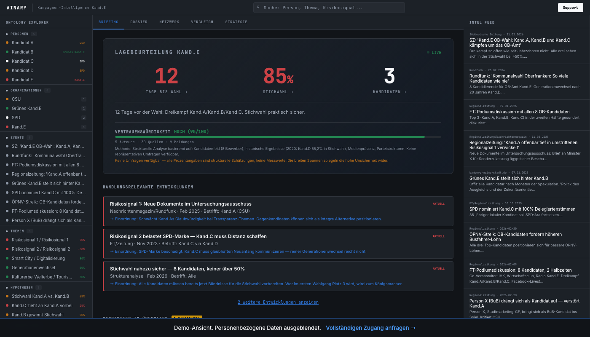

EEvidenced · Belegter Fakt. Quelle vorhanden, verifizierbar.IInterpretation · Unsere Deutung belegter Daten. Andere Lesarten möglich.JJudgment · Einschätzung auf Basis von Erfahrung und Mustern. Kann falsch sein.AAssumption · Annahme. Nicht belegt, aber für die Analyse notwendig.
10+
Städte analysiert
750
Stichwahlen 2020
—
bis zur Wahl
Das Bamberg-Paradox
2020 traten acht Kandidaten zur OB-Wahl in Bamberg an. SPD-Amtsinhaber Andreas Starke führte den ersten Wahlgang mit 35,9%, vor dem Grünen-Kandidaten Jonas Glüsenkamp mit 24,6%.E Starke gewann die Stichwahl mit 59,3%.E Ein SPD-Bürgermeister, wiedergewählt in einem Bundesland, in dem die SPD bei 8,4% steht.E
Wie ist das möglich? Die Antwort liegt nicht in der Stärke der SPD, sondern in der Struktur des Wahlgangs.I Wenn acht Kandidaten antreten, reichen selbst 36% für eine Stichwahl. Und dort gelten andere Regeln: Nicht die Partei zählt, sondern die Person.I
Das Muster: In fragmentierten Feldern schmilzt jeder Vorsprung. 2020 gab es in Bayern rund 750 Stichwahlen, darunter in den 5 größten Städten.E Der Trend geht klar Richtung mehr Stichwahlen, je größer die Kandidatenfelder werden.I
Die Städte im Überblick
Am 8. März 2026 wählen bayerische Großstädte gleichzeitig neue Oberbürgermeister.E Wir haben über 10 Städte datenbasiert analysiert, mit jeweils 30+ öffentlichen Quellen.
Interaktive Analyse mit Szenarien-Simulation, Wählerfluss-Projektion und Kandidaten-Vergleich für alle Städte auf Anfrage verfügbar. Zugang anfragen →
Drei Muster, die alles erklären
1. Fragmentierung erzwingt Stichwahlen. Je mehr Kandidaten, desto unwahrscheinlicher eine absolute Mehrheit.I Regensburg hat 12 Bewerber.E Selbst der stärkste Kandidat wird dort kaum über 35% kommen.J
2. Die Partei zählt weniger als die Person. In Bamberg gewann 2020 der SPD-Amtsinhaber, obwohl die SPD landesweit bei 8,4% steht.E In Würzburg wurde 2025 der erste Grüne OB Bayerns gewählt.E Lokal gelten andere Regeln.I
3. Ohne Amtsinhaber wird alles offen. In Landshut, Regensburg, Bamberg und Passau treten die bisherigen Oberbürgermeister nicht mehr an.E Offene Sitze führen historisch zu deutlich knapperen Ergebnissen.I
Ein Blick ins Dashboard
Live Dashboard · Demo-Ansicht10+ Städte · 300+ Quellen · Echtzeit

Warum datenbasierte Kampagnen gewinnen
300+öffentliche Quellen analysiert über 10+ StädteE750Stichwahlen 2020 in Bayern, darunter die 5 größten StädteE4 von 8Städte in unserem Datensatz ohne amtierenden OBE
Quellen: Bayerisches Landesamt für Statistik, kommunalwahl2020.bayern.de, BR24, Augsburger Allgemeine
Politische Beratungen berechnen für kommunale Wahlanalysen vergleichbaren Umfangs typischerweise €20.000-50.000+.J Unsere Plattform liefert automatisierte, quellenbasierte Analyse in 48 Stunden, kontinuierlich aktualisierbar. Über uns →
Wir machen unsere Prognosen öffentlich. In mindestens 5 der 8 Städte erwarten wir eine Stichwahl am 22. März.J Am Wahlabend um 20 Uhr werden wir die Ergebnisse live mit unseren Prognosen vergleichen.
Liegt unsere Analyse richtig, oder haben wir uns verrannt? In 11 Tagen wissen wir mehr.
Florian Ziesche
Gründer, Ainary Ventures. Ehem. CEO 36ZERO Vision (KI, München). Analysiert Kommunalwahlen mit KI und 300+ Quellen.
Hohe Nachfrage · Begrenzte Verfügbarkeit
Methodik: Strukturelle Schätzung auf Basis öffentlicher Quellen. Keine Umfragedaten (für Kommunalwahlen nicht verfügbar). Alle Einschätzungen nach dem EIJA-System gekennzeichnet. Überparteilich erhoben.
30-60 öffentliche Quellen pro Stadt (Nachrichtenportale, YouTube, Social Media, Google Trends, Ratsinformationssysteme, Wahlarchive) · Interaktive Szenarien-Simulation · Automatisierte Quellenvalidierung · Überparteilich, datenbasiert, transparent.
Ergebnisse am 8. März erhalten
Wir vergleichen unsere Prognosen live mit den Ergebnissen. Eine E-Mail, kein Spam.